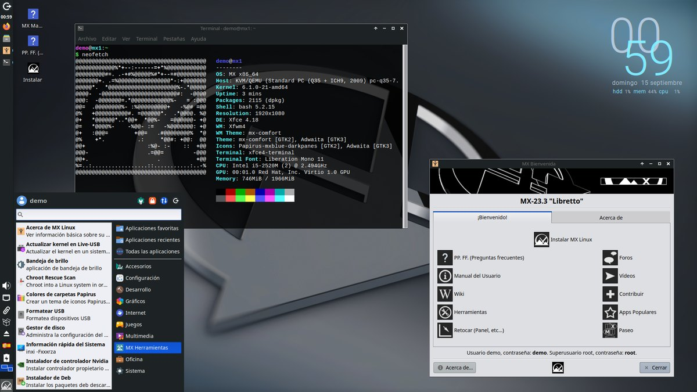

Probar GNU/Linux en clase
Destinatarios: ESO. Duración: una sesión por cada distribución que se pruebe. Agrupamiento: individual o por parejas. Evaluación: el documento que se elabora de cada sistema, revisado con una lista de cotejo.
Esta actividad, pensada para materias como Tecnología y Digitalización, se propone para que el alumnado conozca realmente las posibilidades del software libre de primera mano. El objetivo es que conozca alternativas a los sistemas operativos propietarios y utilice el software libre que Linux incluye en sus distribuciones. Esto será especialmente útil en aquellos centros que no estén utilizando ya alguna de las distribuciones de Linux.
Conviene probar varias de las distribuciones que se recomiendan en «Distribuciones y escritorios para el centro», que aparecen ordenadas de mayor a menor potencia requerida, de modo que se pueden elegir según los ordenadores del aula.
Existen diversas formas de probarlas sin necesidad de instalarlas. A continuación se describen brevemente.
Máquina virtual
En el caso de tener ordenadores con una cierta potencia la solución más sencilla es utilizar un software de virtualización como VirtualBox que simula un ordenador de forma que es posible instalar cualquier sistema operativo de los habituales para comprobar cómo funciona y poder trabajar con él con total normalidad. Existen numerosos manuales que explican su funcionamiento. El artículo Cómo usar VirtualBox para crear máquinas virtuales de otros sistemas operativos en Windows explica en muy pocos pasos cómo hacerlo. Básicamente consiste en bajarse la ISO de la página web del sistema operativo y seleccionar el tamaño del disco duro que se le asigna, así como la memoria RAM. Seleccionando el resto de las opciones por defecto es más que suficiente para cualquier prueba. Una vez instalado se crea un archivo con el sistema operativo que se puede entregar al alumnado.
USB de arranque
Otra forma alternativa, menos dinámica pero aconsejable si los ordenadores tienen poca potencia o memoria, es hacer una unidad USB de arranque que contenga el sistema operativo que se desea probar. De este modo cada estudiante recibe un USB con el sistema operativo en él. La mayor desventaja es que, por norma general, no se pueden guardar archivos en estos USB por lo que el trabajo que haga el alumnado deberá guardarse en otra memoria o en la nube del centro antes de terminar la sesión. Algunas distribuciones, como MX Linux, permiten crear memorias persistentes, que sí conservan los cambios. Cómo crear la memoria y arrancar el ordenador desde ella se explica paso a paso en «Instalar GNU/Linux desde una memoria USB».


Tareas a realizar
Para conocer cada uno de los sistemas operativos el alumnado puede elaborar un documento para cada uno de ellos (por supuesto, escrito desde el mismo) con las siguientes características, que pueden ser ampliadas o reducidas:
- Entorno de escritorio que utiliza (Xfce, GNOME, etc.)
- Programas que lleva incorporado para las tareas más habituales como escribir, escuchar música, ver vídeos, fotos, etc.
- Utilidades del sistema para discos duros, monitor del sistema, etc.
Un entorno de escritorio es el aspecto que se ve y con el que se trabaja, el mismo entorno se puede usar en diferentes sistemas operativos por lo que siendo distintos pueden tener aspectos muy similares
Comparar una herramienta con una alternativa libre
Destinatarios: profesorado, departamentos o coordinación TIC. Duración: una reunión. Agrupamiento: de dos a cuatro docentes. Resultado: una decisión razonada que puede recogerse en el Plan Digital de Centro.
Se elige una herramienta que el centro ya usa, por ejemplo el servicio de formularios o el programa de presentaciones, y una alternativa libre para la misma tarea, que puede buscarse en «Herramientas libres». Las dos se comparan con cinco preguntas:
- Función. ¿Hace lo que se necesita en clase, aunque sea de otra manera?
- Equipos. ¿Funciona en los ordenadores y dispositivos del centro? Véase «Distribuciones y escritorios para el centro».
- Datos. ¿Qué datos del alumnado pide y dónde los guarda? Véase «Datos y servicios digitales del centro».
- Libertades. ¿Qué permite su licencia: instalarla en todos los equipos, adaptarla, compartirla? Véase «Concepto de software libre».
- Adopción. ¿Cuánto cuesta el cambio en formación, en pasar los materiales y en mantenimiento?
La conclusión puede ser adoptar la alternativa, probarla antes con un grupo o mantener por ahora la herramienta actual y fijar cuándo volver a revisarlo. Lo importante es que la decisión quede razonada y por escrito.